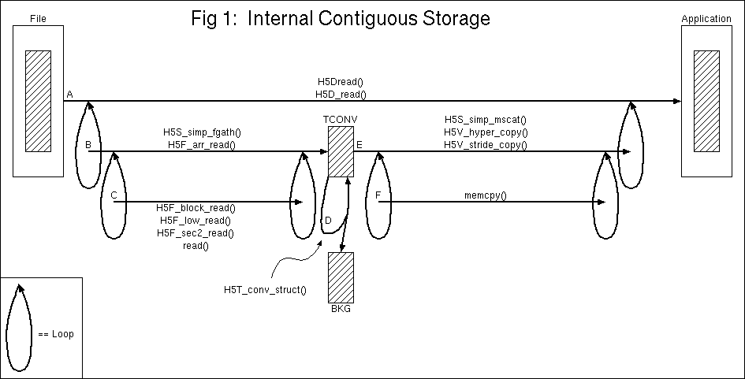
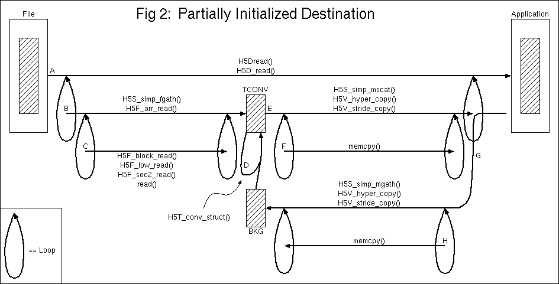

The HDF5 raw data pipeline is a complicated beast that handles all aspects of raw data storage and transfer of that data between the file and the application. Data can be stored contiguously (internal or external), in variable size external segments, or regularly chunked; it can be sparse, extendible, and/or compressible. Data transfers must be able to convert from one data space to another, convert from one number type to another, and perform partial I/O operations. Furthermore, applications will expect their common usage of the pipeline to perform well.
To accomplish these goals, the pipeline has been designed in a modular way so no single subroutine is overly complicated and so functionality can be inserted easily at the appropriate locations in the pipeline. A general pipeline was developed and then certain paths through the pipeline were optimized for performance.
We describe only the file-to-memory side of the pipeline since the memory-to-file side is a mirror image. We also assume that a proper hyperslab of a simple data space is being read from the file into a proper hyperslab of a simple data space in memory, and that the data type is a compound type which may require various number conversions on its members. 
The diagrams should be read from the top down. The Line A
in the figure above shows that H5Dread() copies
data from a hyperslab of a file dataset to a hyperslab of an
application buffer by calling H5D_read(). And
H5D_read() calls, in a loop,
H5S_simp_fgath(), H5T_conv_struct(),
and H5S_simp_mscat(). A temporary buffer, TCONV, is
loaded with data points from the file, then data type conversion
is performed on the temporary buffer, and finally data points
are scattered out to application memory. Thus, data type
conversion is an in-place operation and data space conversion
consists of two steps. An additional temporary buffer, BKG, is
large enough to hold N instances of the destination
data type where N is the same number of data points
that can be held by the TCONV buffer (which is large enough to
hold either source or destination data points).
The application sets an upper limit for the size of the TCONV
buffer and optionally supplies a buffer. If no buffer is
supplied then one will be created by calling
malloc() when the pipeline is executed (when
necessary) and freed when the pipeline exits. The size of the
BKG buffer depends on the size of the TCONV buffer and if the
application supplies a BKG buffer it should be at least as large
as the TCONV buffer. The default size for these buffers is one
megabyte but the buffer might not be used to full capacity if
the buffer size is not an integer multiple of the source or
destination data point size (whichever is larger, but only
destination for the BKG buffer).
Occassionally the destination data points will be partially
initialized and the H5Dread() operation should not
clobber those values. For instance, the destination type might
be a struct with members a and b where
a is already initialized and we're reading
b from the file. An extra line, G, is added to the
pipeline to provide the type conversion functions with the
existing data.

It will most likely be quite common that no data type
conversion is necessary. In such cases a temporary buffer for
data type conversion is not needed and data space conversion
can happen in a single step. In fact, when the source and
destination data are both contiguous (they aren't in the
picture) the loop degenerates to a single iteration.
So far we've looked only at internal contiguous storage, but by
replacing Line B in Figures 1 and 2 and Line A in Figure 3 with
Figure 4 the pipeline is able to handle regularly chunked
objects. Line B of Figure 4 is executed once for each chunk
which contains data to be read and the chunk address is found by
looking at a multi-dimensional key in a chunk B-tree which has
one entry per chunk.

If a single chunk is requested and the destination buffer is
the same size/shape as the chunk, then the CHUNK buffer is
bypassed and the destination buffer is used instead as shown in
Figure 5.